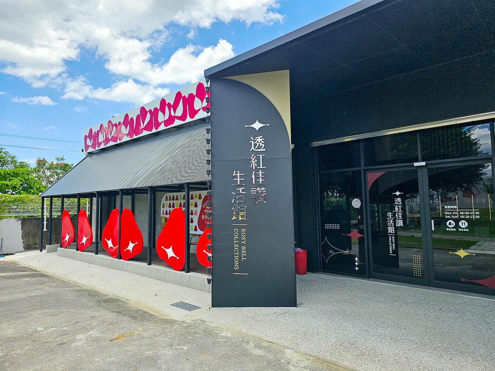
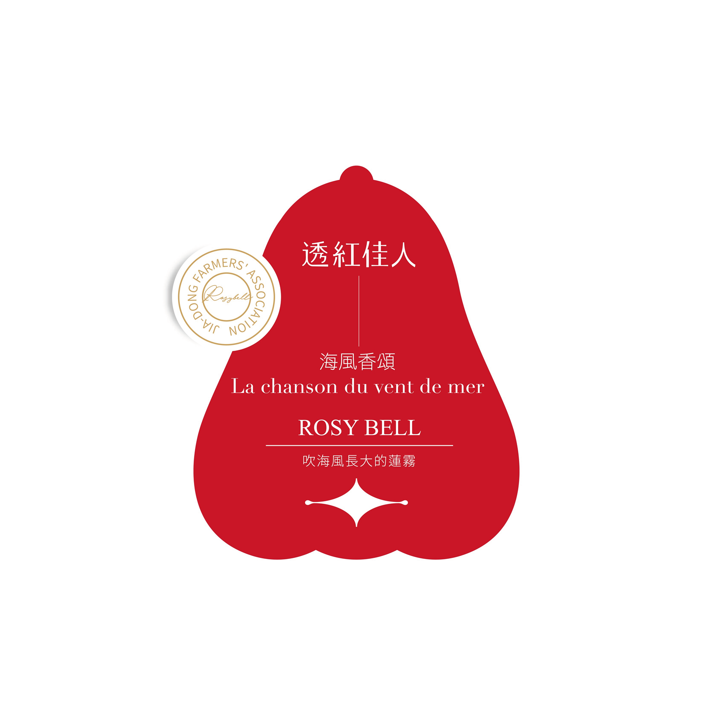
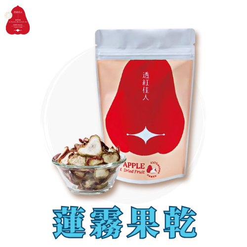

品牌故事
在地風土 · 共好加工 · 自然風味
佳冬鄉農會一個以蓮霧種植和農村體驗為特色的農會。 農會推廣的「透紅佳人」蓮霧品牌，以其高品質和穩定的產量聞名，並成功拓展到國際市場。 此外，佳冬鄉農會也積極發展農村體驗活動，將在地人文與農遊結合，讓遊客體驗客庄風情與文化。

產地風景 / 品牌日常

以蓮霧種植和農村體驗為特色，積極推廣「透紅佳人」蓮霧品牌
佳冬鄉農會一個以蓮霧種植和農村體驗為特色的農會。 農會推廣的「透紅佳人」蓮霧品牌，以其高品質和穩定的產量聞名，並成功拓展到國際市場。 此外，佳冬鄉農會也積極發展農村體驗活動，將在地人文與農遊結合，讓遊客體驗客庄風情與文化。
在地風土 · 共好加工 · 自然風味
佳冬鄉農會一個以蓮霧種植和農村體驗為特色的農會。 農會推廣的「透紅佳人」蓮霧品牌，以其高品質和穩定的產量聞名，並成功拓展到國際市場。 此外，佳冬鄉農會也積極發展農村體驗活動，將在地人文與農遊結合，讓遊客體驗客庄風情與文化。


低溫烘燥留住蓮霧新鮮的好滋味。清甜爽口，含有淡淡果乾香。當成零嘴健康又無負擔！
$200 · 50g/包